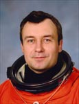

Lyndon B. Johnson Space Center
Houston, Texas 77058
|
National Aeronautics and Space Administration Lyndon B. Johnson Space Center Houston, Texas 77058 |
 |
Biographical Data |
||
Vladimir Nikolaevich Dezhurov
Lieutenant Colonel, test cosmonaut
Resides in Star City
PERSONAL DATA: Born July 30, 1962, Yavas settlement, Zubovo-Polyansk district, Mordovia, Russia. Married to Elena Valentinovna Dezhurova (nee Suprina). Two daughters. Nikolai Serafimovich Dezhurov, father, and Anna Vasilevna Dezhurova, mother, reside in Yavas settlement, Zubovo-Polyansk district, Mordovia, Russia.
EDUCATION: Graduated from the S.I. Gritsevits Kharkov Higher Military Aviation School in 1983 with a pilot-engineer’s diploma.
HONORS: Awarded three Armed Forces medals.
EXPERIENCE: After graduating from the aviation military school in 1983, he served as a pilot and senior pilot in the Air Force.
In 1987, he was assigned to the Cosmonaut Training Center. From December 1987 to June 1989, he underwent a course of general space training. Since September 1989, he has continued training as a member of a group of test cosmonauts. Since 1991, he has been a correspondence student at the Yuri A. Gagarin Air Force Academy.
In March 1994, Dezhurov began flight training as commander of the prime crew of the Mir-18 mission. The crew launched from the Baikonur Cosmodrome in Kazakstan on March 14, 1995 aboard a Soyuz-TM-21 transport vehicle. Following a 115 day flight the mission concluded with landing at the Kennedy Space Center, Florida, aboard Space Shuttle Atlantis on July 7, 1995.
Dezhurov lived and worked aboard the International Space Station for a total of 125 days. The Expedition-3 crew launched on August 10, 2001 aboard STS-105 Discovery and docked with the International Space Station (ISS) on August 12, 2001. They left the station on December 15 aboard STS-108 Endeavour, landing at Kennedy Space Center, Florida, on December 17, 2001.
JANUARY 2002